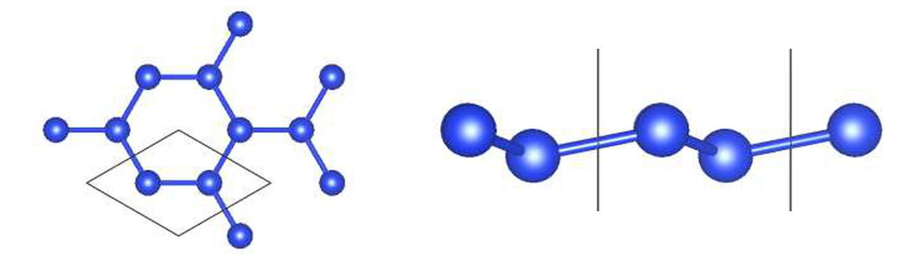
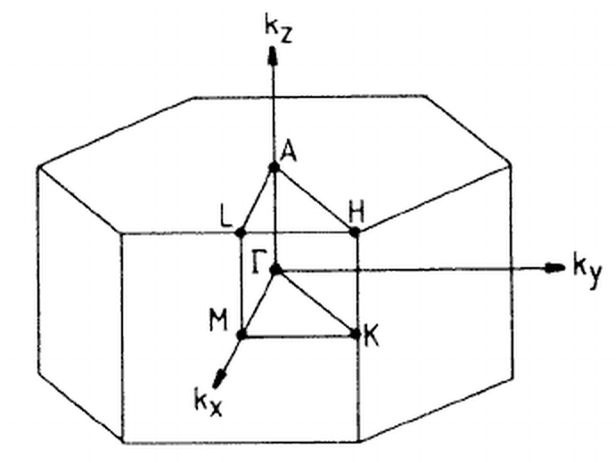
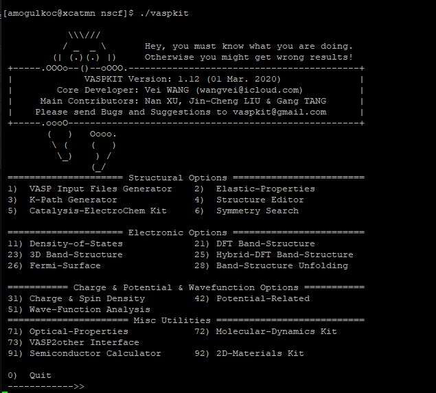
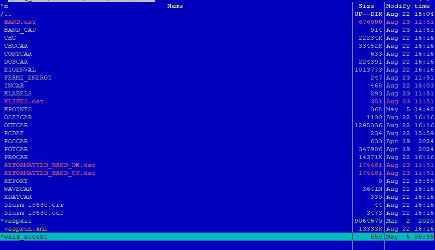
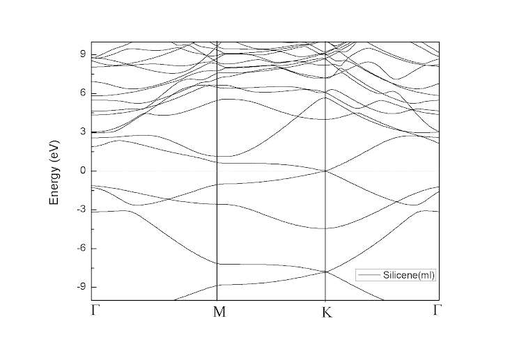

Önce öz-tutarlı (SC) hesap, ardından yüksek simetri yolunda öz-tutarlı olmayan (NSC) hesap yapılır; sonuç vaspkit ile bant verisine dönüştürülür.
Bant yapısı hesabı iki ayrı VASP çalıştırmasından oluşur:
SC hesap klasöründe şu dosyalar olmalıdır:
SYSTEM = Antimonene #Electronic minimization ENCUT = 600 ISMEAR = 0 SIGMA = 0.01 EDIFF = 1E-8 ISPIN = 1 IBRION = 2 ALGO = Normal NBANDS = 96 GGA = PE
| Etiket | Değer | Anlamı |
|---|---|---|
SYSTEM | Antimonene | Hesaba verilen ad (etiket). Yalnızca bir başlıktır; hesabı etkilemez. |
ENCUT | 600 | Düzlem dalga taban kümesi için kesme enerjisi (eV). |
ISMEAR | 0 | Her orbital için kısmi doluluğun (partial occupancy) nasıl belirleneceğini seçer. ISMEAR = 0: Gauss yayılması (Gaussian smearing). |
SIGMA | 0.01 | Yayılmanın (smearing) genişliği, eV cinsinden. |
EDIFF | 1E-8 | Elektronik SC döngüsünün genel durma ölçütü. |
ISPIN | 1 | Spin polarizasyonunu belirler. ISPIN = 1: spin polarize olmayan hesap yapılır. |
IBRION | 2 | İyonları anlık taban durumlarına gevşetmek için eşlenik gradyan (conjugate-gradient) algoritması kullanılır. |
ALGO | Normal | Elektronik minimizasyon algoritmasını seçmenin pratik yolu. |
NBANDS | 96 | Hesaba katılan bant sayısı. (Kaynakta bu etiket için açıklama yoktur.) |
GGA | PE | Kullanılacak genelleştirilmiş gradyan yaklaşımı (GGA) türü. PE: Perdew-Burke-Ernzerhof. |
SYSTEM = Antimonene, NSC INCAR'da SYSTEM = "Silicene" yazar. Aynı örneğin iki adımında ad farklı olsa da SYSTEM yalnızca bir etikettir; sonucu değiştirmez. Kaynaktaki POSCAR ve grafik de silisen (Si) içindir.KPOINTS dosyası, k-noktalarının koordinatlarını ve ağırlıklarını ya da k-noktası ızgarasının boyutunu içermelidir.
k-points 0 Gamma 16 16 1 0.0 0.0 0.0
| Satır | Anlamı |
|---|---|
k-points | Başlık (açıklama) satırı. |
0 | Otomatik k-noktası ızgarası oluşturulur. |
Gamma | Izgara Γ noktasını merkez alır (Γ merkezli ızgara). |
16 16 1 | Izgaranın üç yöndeki bölüm sayısı. |
0.0 0.0 0.0 | Izgaranın kayma değeri. |
POSCAR dosyası örgü geometrisini ve iyon konumlarını içerir.
Silicene
1.00000000000000
3.8679843500000000 0.0000000000000000 0.0000000000000000
-1.9339921750000000 3.3497727089999998 0.0000000000000000
0.0000000000000000 0.0000000000000000 20.0000000000000000
Si
2
Direct
0.3328312623913273 0.6661685526086847 0.4887690584204025
0.6661687446086721 0.3328311993913185 0.5112309415795975
0.00000000E+00 0.00000000E+00 0.00000000E+00
0.00000000E+00 0.00000000E+00 0.00000000E+00

POTCAR dosyası, hesapta kullanılan her atom türü için pseudopotansiyeli içerir. Kaynaktaki örnek, silisyum (Si) için PAW_PBE POTCAR'ının başlangıcıdır (dosyanın ilk satırları belgenin sonundaki Ek bölümündedir).
walk_std kullanılmalıdır.NSC hesap klasöründe şu dosyalar olmalıdır:
POSCAR, SC hesabının CONTCAR dosyasıdır; CHGCAR da SC hesabından gelir.CONTCAR dosyasını NSC klasörüne POSCAR olarak kopyalayın.CHGCAR dosyasını NSC klasörüne kopyalayın.POTCAR dosyasını NSC klasörüne koyun.INCAR dosyasını yazın.KPOINTS dosyasını VASPKIT 302 ile üretin (bölüm 3.2).SYSTEM = "Silicene" #Electronic minimization ENCUT = 600 ISMEAR = 0 SIGMA = 0.01 EDIFF = 1E-6 # LORBIT = 11 ICHARG = 11 ISPIN = 1 IBRION = 2 ALGO = Normal NBANDS = 96 GGA = PE
Kaynakta sarı vurgu yoktur; # LORBIT = 11 ve ICHARG = 11 satırları kalın yazılmıştır. Yukarıda bu iki satır işaretlenmiştir.
| SC INCAR'a göre fark | SC | NSC | Anlamı |
|---|---|---|---|
EDIFF | 1E-8 | 1E-6 | SC döngüsünün durma ölçütü NSC hesapta gevşetilmiştir. |
ICHARG | (yok) | 11 | Yük yoğunluğu CHGCAR dosyasından okunur ve hesap boyunca sabit tutulur; yalnızca özdeğerler hesaplanır (öz-tutarlı olmayan hesap). |
# LORBIT | (yok) | 11 | Satır başında # olduğu için yorumdur. LORBIT = 11 etkin olsaydı atom ve lm-orbital bazında ayrıştırılmış çıktı (PROCAR, DOSCAR) yazdırırdı. |
SYSTEM etiketi farklıdır (SC: Antimonene, NSC: "Silicene"); yalnızca etikettir. Diğer etiketler SC INCAR ile aynıdır: ENCUT = 600, ISMEAR = 0, SIGMA = 0.01, ISPIN = 1, IBRION = 2, ALGO = Normal, NBANDS = 96, GGA = PE.
Bant yapısı, Brillouin bölgesindeki yüksek simetri noktalarını birleştiren yol boyunca hesaplanır. Altıgen örgü için Brillouin bölgesi ve yüksek simetri noktaları (Γ, M, K, A, L, H) aşağıdadır.

Bu örnekte yol Γ → M → K → Γ'dır. KPOINTS dosyasını VASPKIT = 302 ile üretin:
K-Path Generated by VASPKIT. 20 Line-Mode Reciprocal 0.0000000000 0.0000000000 0.0000000000 GAMMA 0.5000000000 0.0000000000 0.0000000000 M 0.5000000000 0.0000000000 0.0000000000 M 0.3333333333 0.3333333333 0.0000000000 K 0.3333333333 0.3333333333 0.0000000000 K 0.0000000000 0.0000000000 0.0000000000 GAMMA
| Satır | Anlamı |
|---|---|
K-Path Generated by VASPKIT. | Başlık satırı. |
20 | Her doğru parçası üzerindeki k-noktası sayısı. |
Line-Mode | K-noktaları, verilen iki uç nokta arasındaki doğru parçaları boyunca üretilir. |
Reciprocal | Koordinatlar ters örgü vektörleri cinsindendir. |
| Satır çiftleri | Her çift bir doğru parçasının başlangıç ve bitiş noktasıdır: GAMMA → M, M → K, K → GAMMA. Çiftler boş satırla ayrılır; son sütun nokta adıdır. |
Bant verisi, NSC hesabının klasöründe vaspkit çalıştırılarak elde edilir.
./vaspkit komutunu çalıştırın. Ana menü açılır (aşağıdaki şekil).21 (DFT Band-Structure) yazın. Band Options menüsü açılır.211 (Band-Structure) seçeneğini girin.
Band Options menüsü (kaynaktaki ekran görüntüsünden):
| Kod | Seçenek |
|---|---|
211 | Band-Structure (kaynakta kullanılan: VASPKIT = 211) |
212 | Projected Band-Structure for Selected Atom |
213 | Projected Band-Structure for Each Element |
214 | The Sum of Projected Band-Structure for Selected Atoms |
215 | Projected Band-Structure by Element Weight |
0 | Quit |
9 | Back |
vaspkit çalıştırıldıktan sonra klasörün içeriği aşağıdaki gibidir. Kaynakta kırmızı ile işaretlenen dosyalar: BAND.dat, KLINES.dat, REFORMATTED_BAND_DW.dat, REFORMATTED_BAND_UP.dat. Listede ayrıca BAND_GAP, FERMI_ENERGY ve KLABELS dosyaları da vardır.

Kaynaktaki örnek BAND.dat çıktısının ilk satırları (NKPTS = 180, NBANDS = 96; hem Spin-Up hem Spin-Down sütunu vardır):
#K-Path Spin-Up Spin-Down # NKPTS & NBANDS: 180 96 # Band-Index 1 0.00000 -12.514855 -12.775801 0.01716 -12.519438 -12.778470 0.03432 -12.531495 -12.786205 0.05148 -12.548368 -12.798349 0.06864 -12.568445 -12.814156 0.08580 -12.590934 -12.832979 0.10295 -12.615423 -12.854318 0.12011 -12.641664 -12.877798 0.13727 -12.669488 -12.903138 ...
Kaynaktaki son slayt, silisen için elde edilen bant yapısını gösterir. Yatay eksen Γ → M → K → Γ yoludur (bölüm 3.2'deki KPOINTS yoluyla aynı), dikey eksen Energy (eV)'dir.

SYSTEM = Antimonene, NSC INCAR'da SYSTEM = "Silicene" yazılıdır; POSCAR, POTCAR ve sonuç grafiği silisen (Si) içindir. SYSTEM yalnızca bir etikettir.vaspkit programı ve walk_accunt adlı bir dosya da görünür. SC bölümünde işin walk_std ile gönderilmesi gerektiği yazılıdır; NSC hesabı için ayrıca bir betik adı verilmemiştir.BAND.dat örnek ekran görüntüsünde NKPTS = 180 ve iki spin sütunu (Spin-Up, Spin-Down) görünür; bu değerler bu kılavuzdaki KPOINTS (20) ve ISPIN = 1 örnekleriyle doğrudan eşleşmez.PAW_PBE Si 05Jan2001 4.00000000000000000 parameters from PSCTR are: VRHFIN =Si: s2p2 LEXCH = PE EATOM = 103.0669 eV, 7.5752 Ry TITEL = PAW_PBE Si 05Jan2001 LULTRA = F use ultrasoft PP ? IUNSCR = 1 unscreen: 0-lin 1-nonlin 2-no RPACOR = 1.500 partial core radius POMASS = 28.085; ZVAL = 4.000 mass and valenz RCORE = 1.900 outmost cutoff radius RWIGS = 2.480; RWIGS = 1.312 wigner-seitz radius (au A) ENMAX = 245.345; ENMIN = 184.009 eV ICORE = 2 local potential LCOR = T correct aug charges LPAW = T paw PP EAUG = 322.069 DEXC = -.007 RMAX = 2.944 core radius for proj-oper RAUG = 1.300 factor for augmentation sphere RDEP = 1.993 radius for radial grids QCUT = -4.246; QGAM = 8.493 optimization parameters Description